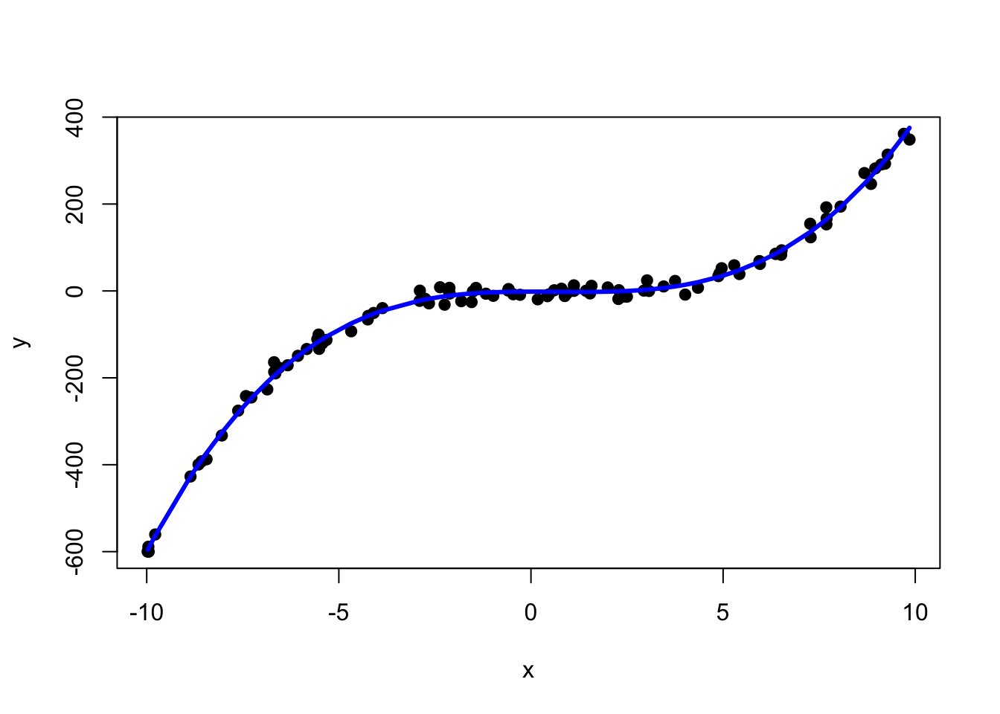

Chapter 12 Multiple Regression
In Chapter 11, we explored simple linear regression to predict a quantitative variable, \(y\), using a single predictor, \(x\). Multiple regression expands this approach by incorporating two or more predictor variables, enabling more comprehensive models. This chapter introduces techniques like variable transformations to improve linearity, interaction terms to capture relationships between predictors, and polynomial regression for modeling curved trends. We also explore model selection strategies to identify the most effective combination of predictors for accurate, reliable predictions.
12.1 Multiple Regression Model
Multiple regression (MR) extends simple linear regression by allowing for multiple predictor variables to model a single response variable.
Population Models for SLR and MR:
SLR: \(y = \beta_0 + \beta_1 x_1 + \epsilon\)
MR: \(y = \beta_0 + \beta_1 x_1 + \beta_2 x_2 + \ldots + \beta_p x_p + \epsilon\)
Estimated Regression Equations for SLR and MR:
SLR: \(\hat{y} = b_0 + b_1 x_1\)
MR: \(\hat{y} = b_0 + b_1 x_1 + b_2 x_2 + \ldots + b_p x_p\)
Assumptions for Multiple Regression
Errors (Independence and Normality): The errors (\(\epsilon_i\)) should be independent and identically distributed normal random variables with a mean of 0 and a constant variance (\(\sigma^2\)). This assumption ensures that the residuals are not systematically related to each other, which can lead to biased estimates.
Linearity: The mean of the response variable is assumed to be a linear combination of the predictor variables. This means the relationship between the predictors and the response should be approximately linear. Residual plots can help identify whether this assumption holds.
Homoscedasticity (Constant Variance of Errors): The errors should have constant variance across all levels of the predictor variables. If the variance of the residuals increases or decreases with the value of the predictors (i.e., heteroscedasticity), it indicates potential issues. A residual plot can help detect heteroscedasticity—look for a “fanning out” or “fanning in” pattern, which suggests non-constant variance.
Note: While estimated regression coefficients can be calculated using matrix methods from linear algebra, we will focus on using R for these calculations.
Example 12.1 The “trees” dataset in R provides measurements of the girth, height, and volume of 31 timber in 31 felled black cherry trees. We can fit a basic linear regression model with height and girth as predictor variables in R as follows.
##
## Call:
## lm(formula = Volume ~ Height + Girth, data = trees)
##
## Residuals:
## Min 1Q Median 3Q Max
## -6.4065 -2.6493 -0.2876 2.2003 8.4847
##
## Coefficients:
## Estimate Std. Error t value Pr(>|t|)
## (Intercept) -57.9877 8.6382 -6.713 2.75e-07 ***
## Height 0.3393 0.1302 2.607 0.0145 *
## Girth 4.7082 0.2643 17.816 < 2e-16 ***
## ---
## Signif. codes: 0 '***' 0.001 '**' 0.01 '*' 0.05 '.' 0.1 ' ' 1
##
## Residual standard error: 3.882 on 28 degrees of freedom
## Multiple R-squared: 0.948, Adjusted R-squared: 0.9442
## F-statistic: 255 on 2 and 28 DF, p-value: < 2.2e-16F-test for Overall Model (Model Utility Test)
We want to test if any of our predictor variables (\(x_i's\)) are linearly related to the response variable (y).
If we have \(p\) predictor variables, then our hypotheses will be:
\(\boxed{F_{test} = \frac{MSR}{MSE}, df_1 = p, df_2 = n-p-1}\)
This will only tell us if any of our predictors are linearly related to the response, not which ones.
Example 12.2 Using the output from the previous page, complete an F-test for overall model for the cherry trees dataset.
t-test for Individual Predictors
If we reject \(H_o\) in our F-test, then we conclude that one or more of our predictor variables is linearly related to our response variable.
We can complete t-tests for each predictor to determine which are useful/significant. For example, we can test an individual predictor with the following hypothesis test:
\(\boxed{t_{test} = \frac{b_i}{s_{b_i}}, df = n-p-1}\)
Rule of Thumb: If \(\beta_i\) is not significantly different from zero (p-value \(\geq \alpha\)), consider dropping that predictor from the model. However, evaluate practical significance and model context before removing variables entirely.
Example 12.3 Using the output from the previous page, complete t-tests for individual predictors (height and diameter).
Interpreting the model estimates (\(b_i\))
Example 12.4 Interpret \(b_2\) from the cherry trees example in the context of the problem.
12.2 Variable Transformations
Sometimes a nonlinear regression function is appropriate which may require us to transform the data. An example of such a nonlinearity is given below.
Transforming Response Variable
Example 12.5 A colony of bacteria is exposed to X-rays and the number of surviving bacteria, \(n\), at time \(t\) are recorded. Let’s examine the data, the SLR line of best fit, and a residual plot.
| \(t\) | 1 | 2 | 3 | 4 | 5 | 6 | 7 | 8 | 9 | 10 | 11 | 12 | 13 | 14 | 15 |
|---|---|---|---|---|---|---|---|---|---|---|---|---|---|---|---|
| \(n_t\) | 355 | 211 | 197 | 166 | 142 | 166 | 104 | 60 | 56 | 38 | 36 | 32 | 21 | 19 | 15 |
By inspection, the line of best fit does not seem appropriate. Additionally, the residual plot suggests that the data has a nonlinearity.
Instead, we could consider the following model: \(n_t = n_0 \cdot e^{\beta t}\).
If we take the natural log of each side of this model, we get: \(ln(n_t) = ln(n_0) + ln(e^{\beta t}) = \alpha + \beta t\).
| \(t\) | 1 | 2 | 3 | 4 | 5 | 6 | 7 | 8 | 9 | 10 | 11 | 12 | 13 | 14 | 15 |
|---|---|---|---|---|---|---|---|---|---|---|---|---|---|---|---|
| \(ln(n_t)\) | 5.87 | 5.35 | 5.28 | 5.11 | 4.96 | 5.11 | 4.64 | 4.09 | 4.03 | 3.64 | 3.58 | 3.47 | 3.04 | 2.94 | 2.71 |
After making this transformation, we can refit the regression model with a much more appropriate model.
A regression model is considered intrinsically linear if, through a transformation on \(Y\) or \(X_i\), it can be expressed as a linear regression model of the form \(y' = \beta_0 + \beta_1 x' + \epsilon'\).
Examples:
\(y = \alpha e^{\beta x} \cdot \epsilon\) transforms to \(\ln(y) = y' = \beta_0 + \beta_1 x' + \epsilon'\), where \(x' = x\), \(\beta_0 = \ln(\alpha)\), \(\beta_1 = \beta\), and \(\epsilon' = \ln(\epsilon)\).
\(y = \alpha x^\beta \cdot \epsilon\) transforms to \(\log(y) = y' = \beta_0 + \beta_1 x' + \epsilon'\), where \(x' = \log(x)\), \(\beta_0 = \log(\alpha)\), \(\beta_1 = \beta\), and \(\epsilon' = \log(\epsilon)\).
Box-Cox Transformation
If the linearity or constant variance assumptions are violated, consider using a Box-Cox transformation to find an appropriate transformation for the response variable. This method can help determine the best power transformation to improve the model fit, making it more linear and stabilizing variance. The boxcox() function in R can be used to explore possible transformations.
Transforming Predictor Variables
We can also transform our predictor variables, \(X_i\), if a nonlinear model is appropriate. Consider the following example with a quadratic relationship.
Example 12.6 From Newtonian Physics, acceleration of an object in free fall drops a distance that is proportional to the square of the elapsed time. Consider the following dataset in which an object’s dropped distance as a function of time and some measurement error is present.
| \(t\) | 0 | 1 | 2 | 3 | 4 | 5 | 6 | 7 | 8 | 9 | 10 |
|---|---|---|---|---|---|---|---|---|---|---|---|
| \(d_t\) | 0 | 8.7 | 20.6 | 37.1 | 82.2 | 120.9 | 177.5 | 244.2 | 310.1 | 399.0 | 480.6 |
First, we will fit the model \(d = b_0 + b_1 t\) and then compare this model with a quadratic model, \(d = b_0 + b_1 t^2\).
t = 0:10
d = c(0,8.7,20.6,37.1,82.2,120.9,177.5,244.2,310.1,399.0,480.6)
lm1 = lm(d~t)
lm2 = lm(d~I(t^2))By inspection, the quadratic model seems more appropriate in terms of the line of best fit and in terms of the residuals.
12.3 Categorical Variables, Interaction, and Polynomial Regression
Categorical Variables
Categorical variables can be easily incorporated in a regression model. In fact, ANOVA from chapter 10 can be thought of as a regression on a categorical variable.
Example 12.7 The following dataset in R was extracted from the 1974 Motor Trend US magazine, and comprises fuel consumption and 10 aspects of automobile design and performance for 32 automobiles (1973-74 models).
## mpg cyl disp hp drat wt qsec vs am gear carb
## Mazda RX4 21.0 6 160 110 3.90 2.620 16.46 0 1 4 4
## Mazda RX4 Wag 21.0 6 160 110 3.90 2.875 17.02 0 1 4 4
## Datsun 710 22.8 4 108 93 3.85 2.320 18.61 1 1 4 1
## Hornet 4 Drive 21.4 6 258 110 3.08 3.215 19.44 1 0 3 1To include a categorical variable in a regression model, you need to designate it as a “factor” variable in R. Let’s fit a multiple regression model with miles per gallon as the response variable, weight as a continuous predictor, and the number of cylinders (4, 6, or 8) as a categorical predictor.
##
## Call:
## lm(formula = mpg ~ wt + factor(cyl), data = mtcars)
##
## Residuals:
## Min 1Q Median 3Q Max
## -4.5890 -1.2357 -0.5159 1.3845 5.7915
##
## Coefficients:
## Estimate Std. Error t value Pr(>|t|)
## (Intercept) 33.9908 1.8878 18.006 < 2e-16 ***
## wt -3.2056 0.7539 -4.252 0.000213 ***
## factor(cyl)6 -4.2556 1.3861 -3.070 0.004718 **
## factor(cyl)8 -6.0709 1.6523 -3.674 0.000999 ***
## ---
## Signif. codes: 0 '***' 0.001 '**' 0.01 '*' 0.05 '.' 0.1 ' ' 1
##
## Residual standard error: 2.557 on 28 degrees of freedom
## Multiple R-squared: 0.8374, Adjusted R-squared: 0.82
## F-statistic: 48.08 on 3 and 28 DF, p-value: 3.594e-11Example 12.8 For the Motor Trends car example, answer the following questions.
- Write the estimated multiple regression equation.
- What is the estimated MPG for a car that weighs 2.900 (thousands of pounds) and has 4 cylinders.
- What is the estimated difference in MPG between an 8-cylinder car and a 6-cylinder car?
- Interpret the estimated regression coefficients in the context of the problem.
Interaction
If the effect of one predictor variable on the response variable depends on other predictor variables, we may want to include an interaction variable.
Example 12.9 Let’s fit the following model: \(MPG = b_0 + b_1 \cdot Weight + b_2 \cdot I(am) + b_3 \cdot Weight \cdot I(am)\), where the ``am’’ variable is 0 for an automatic transmission and 1 is for a manual transmission.
##
## Call:
## lm(formula = mpg ~ wt * factor(am), data = mtcars)
##
## Residuals:
## Min 1Q Median 3Q Max
## -3.6004 -1.5446 -0.5325 0.9012 6.0909
##
## Coefficients:
## Estimate Std. Error t value Pr(>|t|)
## (Intercept) 31.4161 3.0201 10.402 4.00e-11 ***
## wt -3.7859 0.7856 -4.819 4.55e-05 ***
## factor(am)1 14.8784 4.2640 3.489 0.00162 **
## wt:factor(am)1 -5.2984 1.4447 -3.667 0.00102 **
## ---
## Signif. codes: 0 '***' 0.001 '**' 0.01 '*' 0.05 '.' 0.1 ' ' 1
##
## Residual standard error: 2.591 on 28 degrees of freedom
## Multiple R-squared: 0.833, Adjusted R-squared: 0.8151
## F-statistic: 46.57 on 3 and 28 DF, p-value: 5.209e-1112.4 Polynomial regression
There is flexibility in a regression model to fit an arbitrary polynomial to the data, however, we must take care to not “overfit” the data.
The hierarchical principle in polynomial regression states that if a model includes a higher-order term (e.g., \(x^2\)), it should also include all lower-order terms (e.g., \(x\)), even if their coefficients are not statistically significant. This ensures the model is mathematically valid and interpretable, as excluding lower-order terms can distort the relationship between the predictor and the response. However, in certain cases, lower-order terms may be omitted if there is a domain-specific justification, such as theoretical knowledge or practical constraints that support the exclusion.
Example 12.10 Let’s generate a toy dataset based a cubic polynomial and see how successfully we can recover the original function.
## x y
## [1,] -9.976245 -599.8586
## [2,] -9.957027 -588.7105
## [3,] -9.948346 -599.9990
## [4,] -9.779192 -560.4769
## [5,] -8.859972 -427.0615
## [6,] -8.652312 -399.5171##
## Call:
## lm(formula = y ~ x + I(x^2) + I(x^3))
##
## Residuals:
## Min 1Q Median 3Q Max
## -26.9139 -8.4193 0.2316 6.0311 31.3370
##
## Coefficients:
## Estimate Std. Error t value Pr(>|t|)
## (Intercept) -1.582774 1.716694 -0.922 0.359
## x 0.002634 0.516494 0.005 0.996
## I(x^2) -1.013334 0.039545 -25.625 <2e-16 ***
## I(x^3) 0.497069 0.007792 63.792 <2e-16 ***
## ---
## Signif. codes: 0 '***' 0.001 '**' 0.01 '*' 0.05 '.' 0.1 ' ' 1
##
## Residual standard error: 11.92 on 96 degrees of freedom
## Multiple R-squared: 0.9961, Adjusted R-squared: 0.996
## F-statistic: 8212 on 3 and 96 DF, p-value: < 2.2e-16
12.5 Model and Variable Selection
Here are some considerations when completing model and variable selection.
Statistical Significance — Consider removing predictors with high p-values, as they may not contribute significantly to explaining the variation in the response variable. However, be cautious of multicollinearity, as it can impact p-values.
Theoretical and Domain Knowledge — Use knowledge of the field to guide variable selection. Some variables may be essential based on theory, even if their statistical contribution appears marginal.
Practical Significance — Beyond statistical tests, evaluate each variable’s real-world relevance. Retain variables that are meaningful in the context of the problem, even if their statistical significance is lower.
Multicollinearity — Check for high correlations among predictors, as multicollinearity can inflate standard errors and obscure true relationships. Removing or combining correlated variables can improve model stability.
Model Parsimony — Aim for simplicity by retaining only essential variables, as simpler models are often more interpretable and less prone to overfitting. Use metrics like Adjusted \(R^2\), AIC, or BIC to balance fit with model complexity.
Example 12.11 Returning to the cherry trees example, let’s consider the following regression models for predicting tree volume:
Model 1: \(\widehat{\text{volume}} = b_0 + b_1 \cdot \text{Height} + b_2 \cdot \text{Diameter}\)
Model 2: \(\widehat{\text{volume}} = b_0 + b_1 \cdot \text{Height} + b_2 \cdot \text{Diameter}^2\)
Model 3: \(\widehat{\text{volume}} = b_0 + b_1 \cdot \text{Height} \cdot \text{Diameter}^2\)
Model 4: \(\widehat{\text{volume}} = b_1 \cdot \text{Height} \cdot \text{Diameter}^2\)
Which model is preferred?
Model 4 aligns well with our understanding that volume is proportional to \(\text{Height} \times \text{Diameter}^2\). But how could we determine the best model if we didn’t already know this relationship? This is where model selection techniques come in, allowing us to evaluate and compare models based on the data alone, without prior knowledge of the underlying formula.
##
## Call:
## lm(formula = Volume ~ Height + Girth, data = trees)
##
## Residuals:
## Min 1Q Median 3Q Max
## -6.4065 -2.6493 -0.2876 2.2003 8.4847
##
## Coefficients:
## Estimate Std. Error t value Pr(>|t|)
## (Intercept) -57.9877 8.6382 -6.713 2.75e-07 ***
## Height 0.3393 0.1302 2.607 0.0145 *
## Girth 4.7082 0.2643 17.816 < 2e-16 ***
## ---
## Signif. codes: 0 '***' 0.001 '**' 0.01 '*' 0.05 '.' 0.1 ' ' 1
##
## Residual standard error: 3.882 on 28 degrees of freedom
## Multiple R-squared: 0.948, Adjusted R-squared: 0.9442
## F-statistic: 255 on 2 and 28 DF, p-value: < 2.2e-16##
## Call:
## lm(formula = Volume ~ Height + I(Girth^2), data = trees)
##
## Residuals:
## Min 1Q Median 3Q Max
## -4.8844 -2.2105 0.1196 2.6134 4.2404
##
## Coefficients:
## Estimate Std. Error t value Pr(>|t|)
## (Intercept) -27.511603 6.557697 -4.195 0.000248 ***
## Height 0.348809 0.093152 3.744 0.000830 ***
## I(Girth^2) 0.168458 0.006679 25.222 < 2e-16 ***
## ---
## Signif. codes: 0 '***' 0.001 '**' 0.01 '*' 0.05 '.' 0.1 ' ' 1
##
## Residual standard error: 2.799 on 28 degrees of freedom
## Multiple R-squared: 0.9729, Adjusted R-squared: 0.971
## F-statistic: 503.2 on 2 and 28 DF, p-value: < 2.2e-16##
## Call:
## lm(formula = Volume ~ Height:I(Girth^2), data = trees)
##
## Residuals:
## Min 1Q Median 3Q Max
## -4.6195 -1.1002 -0.1656 1.7451 4.1976
##
## Coefficients:
## Estimate Std. Error t value Pr(>|t|)
## (Intercept) -2.977e-01 9.636e-01 -0.309 0.76
## Height:I(Girth^2) 2.124e-03 5.949e-05 35.711 <2e-16 ***
## ---
## Signif. codes: 0 '***' 0.001 '**' 0.01 '*' 0.05 '.' 0.1 ' ' 1
##
## Residual standard error: 2.493 on 29 degrees of freedom
## Multiple R-squared: 0.9778, Adjusted R-squared: 0.977
## F-statistic: 1275 on 1 and 29 DF, p-value: < 2.2e-16##
## Call:
## lm(formula = Volume ~ Height:I(Girth^2) - 1, data = trees)
##
## Residuals:
## Min 1Q Median 3Q Max
## -4.6696 -1.0832 -0.3341 1.6045 4.2944
##
## Coefficients:
## Estimate Std. Error t value Pr(>|t|)
## Height:I(Girth^2) 2.108e-03 2.722e-05 77.44 <2e-16 ***
## ---
## Signif. codes: 0 '***' 0.001 '**' 0.01 '*' 0.05 '.' 0.1 ' ' 1
##
## Residual standard error: 2.455 on 30 degrees of freedom
## Multiple R-squared: 0.995, Adjusted R-squared: 0.9949
## F-statistic: 5996 on 1 and 30 DF, p-value: < 2.2e-16Model Residuals
How can model residuals help us pick the appropriate model?
12.6 Other Considerations
1. Multicollinearity — When two or more predictor variables are highly correlated, it can lead to large standard errors, making it difficult to assess the individual significance of each predictor. This may result in predictors appearing insignificant, even if they are relevant to the model.
2. Dependent Errors — If the errors (residuals) are correlated, the model may be inadequate, as this violates the assumption of independence in regression. In such cases, a time series model may be more appropriate. For example, stock prices often exhibit high autocorrelation (i.e., errors are highly correlated), which indicates the need for specialized models designed to account for time-based dependencies.
3. Confounding Variables — Excluding important variables from a model can lead to incorrect inferences, as confounding variables may influence both the predictor and response variables. For instance, in the example of shark attacks and ice cream sales, there appeared to be a strong relationship between the two. However, the true underlying factor was the temperature: warmer days increase both swimming (leading to more shark interactions) and ice cream sales. Failing to account for such confounding variables can lead to misleading conclusions.
4. Outliers and Influential Points — Outliers or points with high leverage can disproportionately impact the model, skewing results or making the model appear significant when it isn’t. Identifying and investigating outliers can help determine whether to keep them, transform the data, or adjust the model.
5. Overfitting — Adding too many predictors can lead to overfitting, where the model performs well on the sample data but poorly on new data. Techniques like cross-validation, adjusted \(R^2\), and criteria such as AIC or BIC can help assess the model’s generalizability and prevent overfitting.
6. Data Scaling and Centering — Predictor variables on vastly different scales can lead to numerical instability and difficulty interpreting coefficients, especially with interaction terms. Scaling or centering predictors can help stabilize the model and improve interpretability.
12.7 R Companion for Chapter 12
Example 12.12 The dataset is provide in the base version of R and is a macroeconomic data set which provides a well-known example for a highly collinear regression. This dataset includes 7 economical variables, observed yearly from 1947 to 1962 (n=16). For more information on the variables, enter into R.
Let’s begin by looking at the header of the dataset and calculating the correlation matrix.
<<setup2, include=FALSE, cache=FALSE, tidy=TRUE>>= options(tidy=TRUE, width=90) @
## GNP.deflator GNP Unemployed Armed.Forces Population Year Employed
## 1947 83.0 234.289 235.6 159.0 107.608 1947 60.323
## 1948 88.5 259.426 232.5 145.6 108.632 1948 61.122
## 1949 88.2 258.054 368.2 161.6 109.773 1949 60.171
## 1950 89.5 284.599 335.1 165.0 110.929 1950 61.187
## 1951 96.2 328.975 209.9 309.9 112.075 1951 63.221
## 1952 98.1 346.999 193.2 359.4 113.270 1952 63.639## GNP.deflator GNP Unemployed Armed.Forces Population Year Employed
## GNP.deflator 1.00 0.99 0.62 0.46 0.98 0.99 0.97
## GNP 0.99 1.00 0.60 0.45 0.99 1.00 0.98
## Unemployed 0.62 0.60 1.00 -0.18 0.69 0.67 0.50
## Armed.Forces 0.46 0.45 -0.18 1.00 0.36 0.42 0.46
## Population 0.98 0.99 0.69 0.36 1.00 0.99 0.96
## Year 0.99 1.00 0.67 0.42 0.99 1.00 0.97
## Employed 0.97 0.98 0.50 0.46 0.96 0.97 1.00For this example, we will use (number of people employed) as the response variable and the other six variables as predictor variables.
Let’s begin by using all six predictor variables and fitting the multiple regression model.
model1 = lm(Employed~GNP.deflator+GNP+Unemployed+Armed.Forces+Population+Year,
data=longley)
summary(model1)##
## Call:
## lm(formula = Employed ~ GNP.deflator + GNP + Unemployed + Armed.Forces +
## Population + Year, data = longley)
##
## Residuals:
## Min 1Q Median 3Q Max
## -0.41011 -0.15767 -0.02816 0.10155 0.45539
##
## Coefficients:
## Estimate Std. Error t value Pr(>|t|)
## (Intercept) -3.482e+03 8.904e+02 -3.911 0.003560 **
## GNP.deflator 1.506e-02 8.492e-02 0.177 0.863141
## GNP -3.582e-02 3.349e-02 -1.070 0.312681
## Unemployed -2.020e-02 4.884e-03 -4.136 0.002535 **
## Armed.Forces -1.033e-02 2.143e-03 -4.822 0.000944 ***
## Population -5.110e-02 2.261e-01 -0.226 0.826212
## Year 1.829e+00 4.555e-01 4.016 0.003037 **
## ---
## Signif. codes: 0 '***' 0.001 '**' 0.01 '*' 0.05 '.' 0.1 ' ' 1
##
## Residual standard error: 0.3049 on 9 degrees of freedom
## Multiple R-squared: 0.9955, Adjusted R-squared: 0.9925
## F-statistic: 330.3 on 6 and 9 DF, p-value: 4.984e-10As can be seen in the above output, three variables (, , and ) are not significant.
Let’s take a stepwise approach, remove the variable with the largest p-value that is not statistically significant, and refit the model. In this case, let’s remove the predictor variable and refit the multiple regression model.
##
## Call:
## lm(formula = Employed ~ GNP + Unemployed + Armed.Forces + Population +
## Year, data = longley)
##
## Residuals:
## Min 1Q Median 3Q Max
## -0.43015 -0.15399 -0.01832 0.10081 0.44964
##
## Coefficients:
## Estimate Std. Error t value Pr(>|t|)
## (Intercept) -3.450e+03 8.282e+02 -4.165 0.001932 **
## GNP -3.196e-02 2.420e-02 -1.321 0.216073
## Unemployed -1.972e-02 3.861e-03 -5.108 0.000459 ***
## Armed.Forces -1.020e-02 1.908e-03 -5.345 0.000326 ***
## Population -7.754e-02 1.616e-01 -0.480 0.641607
## Year 1.814e+00 4.253e-01 4.266 0.001648 **
## ---
## Signif. codes: 0 '***' 0.001 '**' 0.01 '*' 0.05 '.' 0.1 ' ' 1
##
## Residual standard error: 0.2897 on 10 degrees of freedom
## Multiple R-squared: 0.9955, Adjusted R-squared: 0.9932
## F-statistic: 438.8 on 5 and 10 DF, p-value: 2.242e-11The variable is again statistically not significant and has the largest p-value, so let’s remove that from the model.
##
## Call:
## lm(formula = Employed ~ GNP + Unemployed + Armed.Forces + Year,
## data = longley)
##
## Residuals:
## Min 1Q Median 3Q Max
## -0.42165 -0.12457 -0.02416 0.08369 0.45268
##
## Coefficients:
## Estimate Std. Error t value Pr(>|t|)
## (Intercept) -3.599e+03 7.406e+02 -4.859 0.000503 ***
## GNP -4.019e-02 1.647e-02 -2.440 0.032833 *
## Unemployed -2.088e-02 2.900e-03 -7.202 1.75e-05 ***
## Armed.Forces -1.015e-02 1.837e-03 -5.522 0.000180 ***
## Year 1.887e+00 3.828e-01 4.931 0.000449 ***
## ---
## Signif. codes: 0 '***' 0.001 '**' 0.01 '*' 0.05 '.' 0.1 ' ' 1
##
## Residual standard error: 0.2794 on 11 degrees of freedom
## Multiple R-squared: 0.9954, Adjusted R-squared: 0.9937
## F-statistic: 589.8 on 4 and 11 DF, p-value: 9.5e-13All of the predictor variables are now statistically significant at \(\alpha=0.05\).
Note that \(R^2 = 0.9954\), so 99.54% of the variability in the number of employed people can be explained by the linear relationship with gross national product (GNP), number of unemployed people, number of people in the armed forces, and year. This is a very large value for \(R^2\) which suggests a very good model fit.
One caution is that our predictor variables are highly correlated (see correlation matrix at the beginning of the example), so this could result in high standard errors. This concern of is beyond the scope of this class and is covered in more advanced statistics courses.